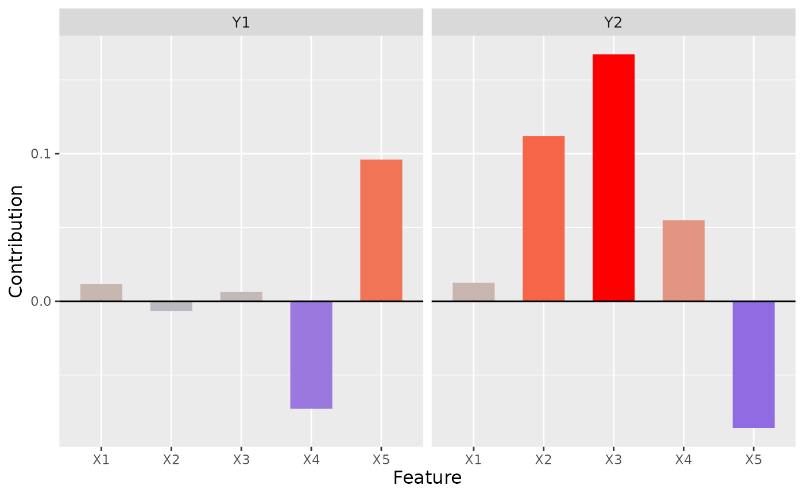
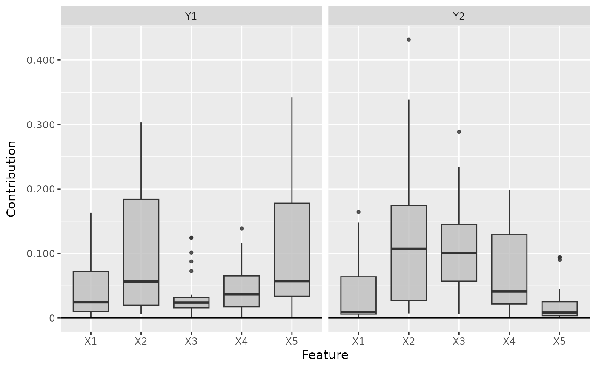
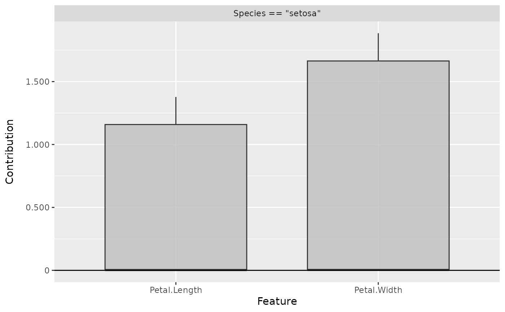
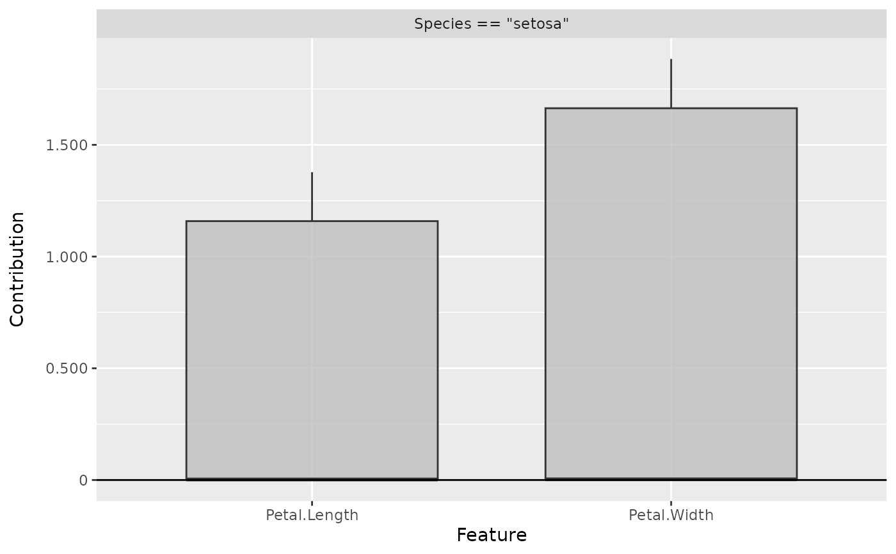

This is an implementation of the deep learning important features
(DeepLift) algorithm introduced by Shrikumar et al. (2017). It's a local
method for interpreting a single element \(x\) of the dataset concerning
a reference value \(x'\) and returns the contribution of each input
feature from the difference of the output (\(y=f(x)\)) and reference
output (\(y'=f(x')\)) prediction. The basic idea of this method is to
decompose the difference-from-reference prediction with respect to the
input features, i.e.,
$$\Delta y = y - y' = \sum_i C(x_i).$$
Compared to Layer-wise relevance propagation (see LRP), the
DeepLift method is an exact decomposition and not an approximation, so we
get real contributions of the input features to the
difference-from-reference prediction. There are two ways to handle
activation functions: the Rescale rule ('rescale') and
RevealCancel rule ('reveal_cancel').
The R6 class can also be initialized using the run_deeplift function
as a helper function so that no prior knowledge of R6 classes is required.
References
A. Shrikumar et al. (2017) Learning important features through propagating activation differences. ICML 2017, p. 4844-4866
See also
Other methods:
ConnectionWeights,
DeepSHAP,
ExpectedGradient,
Gradient,
IntegratedGradient,
LIME,
LRP,
SHAP,
SmoothGrad
Super class
innsight::InterpretingMethod -> DeepLift
Public fields
x_ref(
list)
The reference input for the DeepLift method. This value is stored as a list oftorch_tensors of shape (1, dim_in) for each input layer.rule_name(
character(1))
Name of the applied rule to calculate the contributions. Either'rescale'or'reveal_cancel'.
Methods
Method new()
Create a new instance of the DeepLift R6 class. When initialized,
the method DeepLift is applied to the given data and the results are stored in
the field result.
Usage
DeepLift$new(
converter,
data,
channels_first = TRUE,
output_idx = NULL,
output_label = NULL,
ignore_last_act = TRUE,
rule_name = "rescale",
x_ref = NULL,
winner_takes_all = TRUE,
verbose = interactive(),
dtype = "float"
)Arguments
converter(
Converter)
An instance of theConverterclass that includes the torch-converted model and some other model-specific attributes. SeeConverterfor details.data(
array,data.frame,torch_tensororlist)
The data to which the method is to be applied. These must have the same format as the input data of the passed model to the converter object. This means eitheran
array,data.frame,torch_tensoror array-like format of size (batch_size, dim_in), if e.g., the model has only one input layer, ora
listwith the corresponding input data (according to the upper point) for each of the input layers.
channels_first(
logical(1))
The channel position of the given data (argumentdata). IfTRUE, the channel axis is placed at the second position between the batch size and the rest of the input axes, e.g.,c(10,3,32,32)for a batch of ten images with three channels and a height and width of 32 pixels. Otherwise (FALSE), the channel axis is at the last position, i.e.,c(10,32,32,3). If the data has no channel axis, use the default valueTRUE.output_idx(
integer,listorNULL)
These indices specify the output nodes for which the method is to be applied. In order to allow models with multiple output layers, there are the following possibilities to select the indices of the output nodes in the individual output layers:An
integervector of indices: If the model has only one output layer, the values correspond to the indices of the output nodes, e.g.,c(1,3,4)for the first, third and fourth output node. If there are multiple output layers, the indices of the output nodes from the first output layer are considered.A
listofintegervectors of indices: If the method is to be applied to output nodes from different layers, a list can be passed that specifies the desired indices of the output nodes for each output layer. Unwanted output layers have the entryNULLinstead of a vector of indices, e.g.,list(NULL, c(1,3))for the first and third output node in the second output layer.NULL(default): The method is applied to all output nodes in the first output layer but is limited to the first ten as the calculations become more computationally expensive for more output nodes.
output_label(
character,factor,listorNULL)
These values specify the output nodes for which the method is to be applied. Only values that were previously passed with the argumentoutput_namesin theconvertercan be used. In order to allow models with multiple output layers, there are the following possibilities to select the names of the output nodes in the individual output layers:A
charactervector orfactorof labels: If the model has only one output layer, the values correspond to the labels of the output nodes named in the passedConverterobject, e.g.,c("a", "c", "d")for the first, third and fourth output node if the output names arec("a", "b", "c", "d"). If there are multiple output layers, the names of the output nodes from the first output layer are considered.A
listofcharactor/factorvectors of labels: If the method is to be applied to output nodes from different layers, a list can be passed that specifies the desired labels of the output nodes for each output layer. Unwanted output layers have the entryNULLinstead of a vector of labels, e.g.,list(NULL, c("a", "c"))for the first and third output node in the second output layer.NULL(default): The method is applied to all output nodes in the first output layer but is limited to the first ten as the calculations become more computationally expensive for more output nodes.
ignore_last_act(
logical(1))
Set this logical value to include the last activation functions for each output layer, or not (default:TRUE). In practice, the last activation (especially for softmax activation) is often omitted.rule_name(
character(1))
Name of the applied rule to calculate the contributions. Use either'rescale'or'reveal_cancel'.x_ref(
array,data.frame,torch_tensororlist)
The reference input for the DeepLift method. This value must have the same format as the input data of the passed model to the converter object. This means eitheran
array,data.frame,torch_tensoror array-like format of size (1, dim_in), if e.g., the model has only one input layer, ora
listwith the corresponding input data (according to the upper point) for each of the input layers.It is also possible to use the default value
NULLto take only zeros as reference input.
winner_takes_all(
logical(1))
This logical argument is only relevant for MaxPooling layers and is otherwise ignored. With this layer type, it is possible that the position of the maximum values in the pooling kernel of the normal input \(x\) and the reference input \(x'\) may not match, which leads to a violation of the summation-to-delta property. To overcome this problem, another variant is implemented, which treats a MaxPooling layer as an AveragePooling layer in the backward pass only, leading to an uniform distribution of the upper-layer contribution to the lower layer.verbose(
logical(1))
This logical argument determines whether a progress bar is displayed for the calculation of the method or not. The default value is the output of the primitive R functioninteractive().dtype(
character(1))
The data type for the calculations. Use either'float'fortorch_floator'double'fortorch_double.
Examples
#----------------------- Example 1: Torch ----------------------------------
library(torch)
# Create nn_sequential model and data
model <- nn_sequential(
nn_linear(5, 12),
nn_relu(),
nn_linear(12, 2),
nn_softmax(dim = 2)
)
data <- torch_randn(25, 5)
ref <- torch_randn(1, 5)
# Create Converter using the helper function `convert`
converter <- convert(model, input_dim = c(5))
# Apply method DeepLift
deeplift <- DeepLift$new(converter, data, x_ref = ref)
# You can also use the helper function `run_deeplift` for initializing
# an R6 DeepLift object
deeplift <- run_deeplift(converter, data, x_ref = ref)
# Print the result as a torch tensor for first two data points
get_result(deeplift, "torch.tensor")[1:2]
#> torch_tensor
#> (1,.,.) =
#> 0.0178 -0.0060
#> -0.1394 -0.1745
#> 0.0003 0.0058
#> 0.0948 0.1309
#> 0.0561 -0.0068
#>
#> (2,.,.) =
#> 0.0628 -0.0092
#> -0.2648 -0.1709
#> 0.1243 0.2885
#> -0.0944 0.1319
#> -0.3421 0.0093
#> [ CPUFloatType{2,5,2} ]
# Plot the result for both classes
plot(deeplift, output_idx = 1:2)

# Plot the boxplot of all datapoints and for both classes
boxplot(deeplift, output_idx = 1:2)

# ------------------------- Example 2: Neuralnet ---------------------------
if (require("neuralnet")) {
library(neuralnet)
data(iris)
# Train a neural network
nn <- neuralnet((Species == "setosa") ~ Petal.Length + Petal.Width,
iris,
linear.output = FALSE,
hidden = c(3, 2), act.fct = "tanh", rep = 1
)
# Convert the model
converter <- convert(nn)
# Apply DeepLift with rescale-rule and a reference input of the feature
# means
x_ref <- matrix(colMeans(iris[, c(3, 4)]), nrow = 1)
deeplift_rescale <- run_deeplift(converter, iris[, c(3, 4)], x_ref = x_ref)
# Get the result as a dataframe and show first 5 rows
get_result(deeplift_rescale, type = "data.frame")[1:5, ]
# Plot the result for the first datapoint in the data
plot(deeplift_rescale, data_idx = 1)
# Plot the result as boxplots
boxplot(deeplift_rescale)
}
 # ------------------------- Example 3: Keras -------------------------------
if (require("keras") & keras::is_keras_available()) {
library(keras)
# Make sure keras is installed properly
is_keras_available()
data <- array(rnorm(10 * 32 * 32 * 3), dim = c(10, 32, 32, 3))
model <- keras_model_sequential()
model %>%
layer_conv_2d(
input_shape = c(32, 32, 3), kernel_size = 8, filters = 8,
activation = "softplus", padding = "valid") %>%
layer_conv_2d(
kernel_size = 8, filters = 4, activation = "tanh",
padding = "same") %>%
layer_conv_2d(
kernel_size = 4, filters = 2, activation = "relu",
padding = "valid") %>%
layer_flatten() %>%
layer_dense(units = 64, activation = "relu") %>%
layer_dense(units = 16, activation = "relu") %>%
layer_dense(units = 2, activation = "softmax")
# Convert the model
converter <- convert(model)
# Apply the DeepLift method with reveal-cancel rule
deeplift_revcancel <- run_deeplift(converter, data,
channels_first = FALSE,
rule_name = "reveal_cancel"
)
# Plot the result for the first image and both classes
plot(deeplift_revcancel, output_idx = 1:2)
# Plot the pixel-wise median reelvance image
plot_global(deeplift_revcancel, output_idx = 1)
}

#------------------------- Plotly plots ------------------------------------
if (require("plotly")) {
# You can also create an interactive plot with plotly.
# This is a suggested package, so make sure that it is installed
library(plotly)
boxplot(deeplift, as_plotly = TRUE)
}
# ------------------------- Example 3: Keras -------------------------------
if (require("keras") & keras::is_keras_available()) {
library(keras)
# Make sure keras is installed properly
is_keras_available()
data <- array(rnorm(10 * 32 * 32 * 3), dim = c(10, 32, 32, 3))
model <- keras_model_sequential()
model %>%
layer_conv_2d(
input_shape = c(32, 32, 3), kernel_size = 8, filters = 8,
activation = "softplus", padding = "valid") %>%
layer_conv_2d(
kernel_size = 8, filters = 4, activation = "tanh",
padding = "same") %>%
layer_conv_2d(
kernel_size = 4, filters = 2, activation = "relu",
padding = "valid") %>%
layer_flatten() %>%
layer_dense(units = 64, activation = "relu") %>%
layer_dense(units = 16, activation = "relu") %>%
layer_dense(units = 2, activation = "softmax")
# Convert the model
converter <- convert(model)
# Apply the DeepLift method with reveal-cancel rule
deeplift_revcancel <- run_deeplift(converter, data,
channels_first = FALSE,
rule_name = "reveal_cancel"
)
# Plot the result for the first image and both classes
plot(deeplift_revcancel, output_idx = 1:2)
# Plot the pixel-wise median reelvance image
plot_global(deeplift_revcancel, output_idx = 1)
}

#------------------------- Plotly plots ------------------------------------
if (require("plotly")) {
# You can also create an interactive plot with plotly.
# This is a suggested package, so make sure that it is installed
library(plotly)
boxplot(deeplift, as_plotly = TRUE)
}